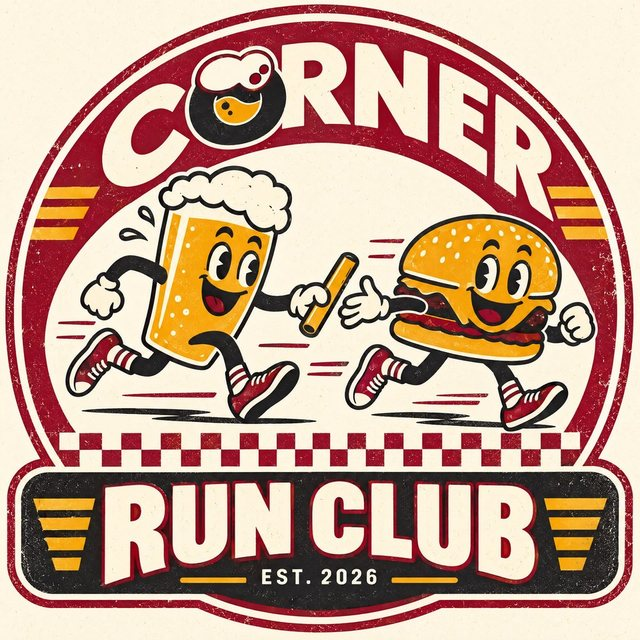
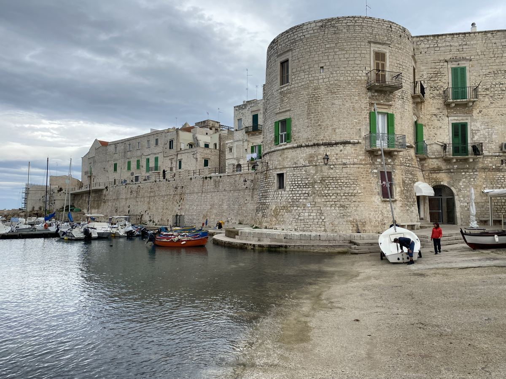
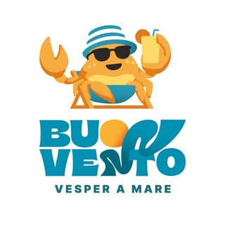

Sunset Run · Giovinazzo
CORRI AL TRAMONTO, INSIEME.
Il Corner Run Club è la corsa del Corner Pub: ritrovo al Piazzale dell'Aeronautica, riscaldamento con Netium, arrivo da Buonvento. La quota si paga al ritrovo e il pass con QR è la tua conferma.
L'evento
Giovinazzo Sunset Run
Lo organizza il Corner Giovinazzo, con Netium e Buonvento. Il ritrovo tipico è alle 18:30 al Piazzale dell'Aeronautica: Netium guida il riscaldamento, poi si corre al tramonto. Il traguardo è da Buonvento, con DJ set. Il Corner mette avocado toast e acqua. Tutti i livelli sono benvenuti.
- Ritrovo al Piazzale dell'Aeronautica
- Riscaldamento a cura di Netium
- Corsa al tramonto, in genere 3,5 km
- Arrivo da Buonvento, quota da pagare in loco
Durante l'evento i partecipanti sono coperti da assicurazione per la manifestazione.


BuonventoCome ci si iscrive
Prossime uscite
Pass pronto
Conserva il PDF. Al ritrovo lo staff legge il QR dal back office. Se chiudi la pagina, puoi recuperare il pass più sotto con lo stesso numero.